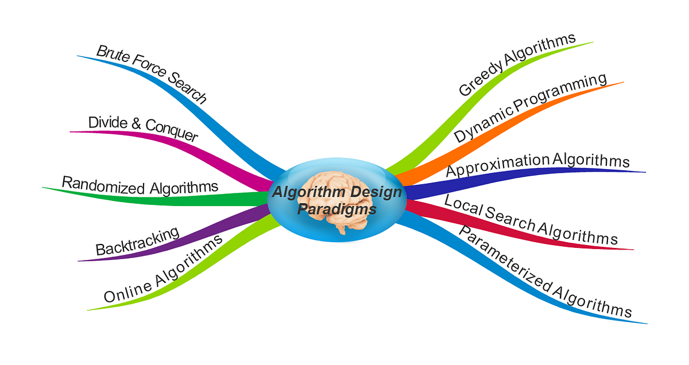

Algorithm techniques is a form of classification for different algorithms. There are multiple different techniques such as:
- Greedy Method: Decisions are made to choose the current best option without thinking about the overall outcome
- Divide & Conquer: Divide the problem into sub-problems and solve them recursively. Then combine all the solutions we have gotten from the subproblems to get the overall answer
Ex: Merge Sort
- Brute Force: Trying all possible solutions
There are different subtopics within algorithms that you can check out in the links above!
Source: geeksforgeeks
